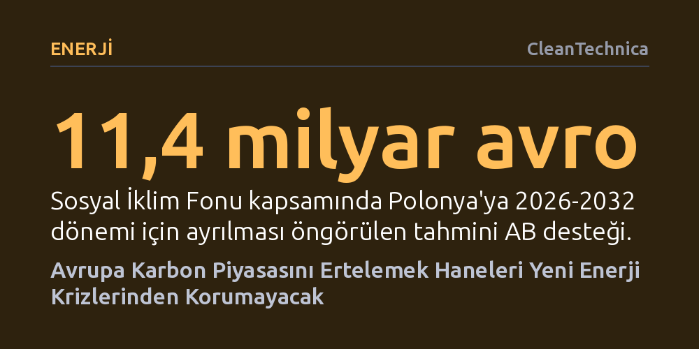

ENERJI · CleanTechnica · 2026-10-17
Ulaşım ve ısınmada yeni karbon piyasasını ertelemek, haneleri enerji faturalarındaki artıştan korumadığı gibi onları küresel petrol ve gaz şoklarına bağımlı bırakır. Gerçek koruma, ertelemeyle değil; mevcut iklim fonlarıyla dar gelirlilerin temiz enerjiye geçişini bugünden finanse etmekle sağlanabilir.
İklim politikalarını ertelemenin vatandaşı ekonomik olarak koruduğu yanılgısını yıkarak, haneleri korumanın tek kalıcı yolunun fosil yakıt bağımlılığını bitirecek yatırımları hemen başlatmak olduğunu gösteriyor.

İtalya, Polonya ve Çekya gibi Avrupa Birliği üyeleri, artan yaşam maliyetlerini ve yüksek enerji faturalarını gerekçe göstererek binalarda ısınma ile karayolu taşımacılığını kapsayacak yeni karbon piyasasının (ETS2) ertelenmesini istiyor. İşe gitmek için eski dizel aracına muhtaç olan ya da evindeki gaz kazanını yenileyemeyen dar gelirli bir hane için ilave bir karbon maliyeti şüphesiz ciddi bir endişe kaynağıdır. Ancak bu itiraz, sorunun asıl kökenini ıskalıyor.
Karbon fiyatlandırmasını ertelemek, dar gelirli aileleri korumak bir yana, onları bugün de bütçelerini tüketen fosil yakıt fiyat dalgalanmalarına mahkûm etmeye devam ediyor. Sürücülerin halihazırda akaryakıt istasyonlarında ödediği petrol ve dizel primlerinin yanında getirilmesi planlanan karbon vergisinin payı oldukça küçük kalıyor. Takvimi ötelemek, küresel petrol piyasasındaki fiyat sıçramalarına ya da doğalgaz arzındaki kesintilere karşı kimseye bir koruma kalkanı sağlamıyor.
Erteleme talep eden ülkelerin enerji yapıları incelendiğinde direncin arkasındaki çelişki daha da netleşiyor. İtalya ısınma ve elektrikte yüksek oranda doğalgaza bağımlıyken, Çekya'nın 2024 yılı enerji arzının yaklaşık yüzde 40'ını petrol ve gaz oluşturuyor. Polonya'nın kendi zengin kömür kaynakları bulunsa da bu durum araç sahiplerini küresel petrol fiyatlarının sert dalgalanmalarından korumaya yetmiyor.
Bu üç ülkenin tamamında ailelerin petrol ve doğalgaz tüketimini düşürmelerine destek olmak, hem ulusal enerji güvenliğini artırmanın hem de gelecekteki fiyat krizlerine karşı hane bütçelerini güçlendirmenin tek gerçek yoludur. Fosil yakıtlara alternatif sunacak dönüşüm adımlarını geciktirmek, vatandaşın kırılganlığını azaltmadığı gibi gelecekteki enerji şoklarının faturasını daha da ağırlaştırıyor.
2028 yılında başlaması öngörülen ETS2, sadece bir vergilendirme aracı değil; elde edilecek gelirlerin doğrudan iklim ve sosyal yardım tedbirlerine yönlendirileceği geniş kapsamlı bir kaynak mekanizmasıdır. Hanelerin bu süreci yalnızca ek bir mali yük olarak mı yoksa fosil yakıt bağımlılığından çıkışın bir fırsatı olarak mı yaşayacağı, hükümetlerin şimdiden alacağı kararlara bağlı bulunuyor.
Sosyal İklim Fonu kapsamında 2026-2032 dönemi için planlanan kaynaklar oldukça yüksek tutarlara ulaşıyor: Gerekli planlamalar yapıldığında Polonya yaklaşık 11,4 milyar avro, İtalya 7 milyar avro, Çekya ise 1,6 milyar avro doğrudan AB hibesi alabilecek. Ulusal katkı paylarıyla daha da büyüyecek bu bütçe; dar gelirli çalışanlar için uygun şartlı elektrikli araç kiralama modellerini, toplu taşımanın geliştirilmesini, bina yalıtımını ve ısı pompası kurulumlarını finanse etmek için tasarlandı. Hükümetlerin odaklanması gereken konu erteleme istemek değil, bu kaynakları halkın kolayca erişebileceği somut çözümlere dönüştürmektir.
Hükümetlerin hanelere yardım eli uzatmak için 2028'i beklemesine lüzum yok. Sosyal İklim Fonu 2026'da mevcut karbon piyasasından elde edilecek erken gelirlerle faaliyete geçeceği gibi, Avrupa Yatırım Bankası'nın sunduğu 3 milyar avroluk ön finansman imkânı da yatırımların bugünden başlatılmasına olanak tanıyor. Hazır olan bu araçları devreye almayıp süreci ertelemeye çalışmak ciddi bir hazırlıksızlık göstergesidir.
İsveç, beklemeden harekete geçilebileceğini uygulamada kanıtlıyor. 533 milyon avroluk planı kapsamında kırsal bölgelerdeki ve toplu taşıması yetersiz alanlardaki dar gelirli hanelere elektrikli araç edinme desteği sunan ülke, kısa sürede 12 binden fazla başvuru alarak bunların neredeyse yarısını onayladı bile. Yazıda da altı çizildiği üzere, "Ertelemek için her zaman bir başka siyasi gerekçe bulunacaktır." Asıl sorumluluk, vatandaşın bütçesini bugünden rahatlatacak ve fosil yakıtlardan çıkışı sağlayacak inandırıcı bir planı hayata geçirmektir.